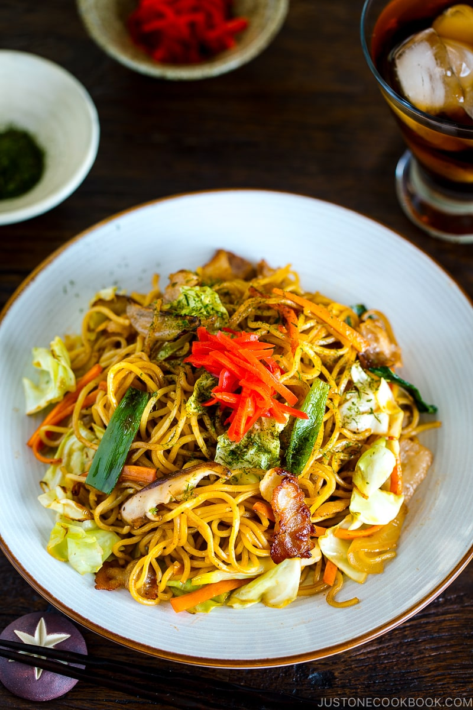

Yakisoba Recipe

Description
Yakisoba means "fried noodle" in Japanese, and it is a popular Japanese dish made from grilled/fried ramen noodles tossed with meat and vegetables and flavoured with a delicious Yakisoba sauce.
Ingredients
- 230 grams fresh yellow noodles (such as ramen)
- 2 teaspoons vegetable oil
- 100 gramspork belly (or bacon, thinly sliced & chopped)
- 100 gramsonion (~1/2 small onion, sliced)
- 100 gramscabbage (~2 leaves, chopped)
- 60 gramscarrot (~1/2 carrot, julienned)
- 2 tablespoons Worcestershire sauce
- 1 tablespoon ketchup
- 1 tablespoon oyster sauce
- 1/2 tablespoon honey
- 1/4 teaspoon white pepper
- 1 tablespoonvegetable oil
- Aonori
- Benishoga
Steps
- Boil the noodles according to the directions on the package. When the noodles are done, drain and rinse thoroughly with cold water, using your fingers to agitate the noodles. Drain as much water off the noodles as possible by using a dropping motion with both hands and yanking up suddenly. Toss the noodles with 2 teaspoons of vegetable oil to keep the noodles from sticking together.
- Prep the vegetables and make the sauce by whisking together the Worcestershire sauce, ketchup, oyster sauce, honey and white pepper in a small bowl.
- Heat a large heavy-bottomed frying pan or griddle over high heat until hot. Add 1 tablespoon of oil along with the pork belly or bacon. Fry until the fat from the pork has started to render out.
- Add the carrots, onions, and cabbage and stir fry using two spatulas until the vegetables are vibrant in color and starting to wilt (they do not need to be fully cooked through yet).
- Add noodles and toss with the oil in the pan. If you notice they are sticking, add some more oil directly onto the noodles.
- Drizzle the sauce evenly over the noodles and continue tossing and frying until the noodles are a uniform color and you can smell the sauce starts to caramelize.
- Plate the yakisoba and sprinkle with aonori and benishoga to garnish.
Return to top